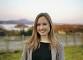
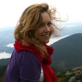
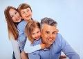

Gemma Barbara Danks
Post doc forskare i Bergen t.o.m. 2012-04.
| Far: | Martin Frank Danks |
|---|
| Mor: | Susan Barbara Thurlow (1957 - ) |
|---|
| Född: | 1982 Shrewsbury, Shropshire, UK. | |
|---|
| Ph dr student: | 2005-10 University of York, UK. [1] | |
|---|
| Examen: | 2008-10 University of York, Great Britain. [2] | Ph Doc exam |
|---|
| Post doc: | 2009-09 Bergen, Norge. [3] | In ECAL 2009, Budapest, Hungary, September 2009. LNCS 5777:289-296. Springer, 2011 |
|---|
| Post doc: | före 2012-04 Uni Research, Bergen, Norge. | |
|---|
| Levde Sambo: | efter 2012-04 Wien, Österrike. |
|---|
| Vigsel: | 2013-08-10 Shropshire, England. |
|---|
| Levde: | 2017 Ålandsvik, Norge. |
|---|
| Barn: |
|---|
| Dylan Fredman-Danks (2012 - ) |
| Eva Fredman-Danks (2014 - ) |
Noteringar
Postdoctoral Researcher - Uni Research - Bergen, Hordaland - York, North Yorkshire - St Andrews, Fife - Shrewsbury, Shropshire.
Gemma Danks
Oct 2005 - Oct 2008 BBSRC award co-supervised with Leo Caves 2008: PhD thesis: Protein Folding with L-systems
2009:Co-translational protein folding with L-Systems
2008:Protein folding with stochastic L-Systems
2007:Folding Protein-Like Structures with Open L-systems
Har lockats över till Sonat Consulting AS i Bergen. AI - maskininlärning, artificiell intelligens.
sonat.no/
Congrat. Gemma, första kvinnan i ett elitföretag med idel manliga fil dr !!! maken David Fredman är Partner & Senior Consultant - Sonat Consulting AS
Se också Familjesidan: fredman.se/fredman.se/fam-links.htm
Personhistoria
| Årtal | Ålder | Händelse |
|---|
| 1982 |
|
Födelse 1982 Shrewsbury, Shropshire, UK |
| 1985 |
|
Brodern Stuart James Danks föds 1985-06-07 Shrewsbury, Shropshire, UK |
| 1990 |
|
Brodern Edward (Eddie) J Danks föds 1990-02-01 Shrewsbury, Shropshire, UK |
| 2005 |
|
Ph dr student 2005-10 University of York, UK [1] |
| 2008 |
|
Examen 2008-10 University of York, Great Britain [2] |
| 2009 |
|
Post doc 2009-09 Bergen, Norge [3] |
| 2012 |
|
Sonen Dylan Fredman-Danks föds 2012 Allgemeines Krankenhaus, Wien |
| <2012 |
|
Post doc före 2012-04 Uni Research, Bergen, Norge |
| >2012 |
|
Levde Sambo David Fredman efter 2012-04 Wien, Österrike |
| 2013 |
|
Vigsel David Fredman 2013-08-10 Shropshire, England |
| 2014 |
|
Dottern Eva Fredman-Danks föds 2014 Bergen (No) |
| 2017 |
|
Levde David Fredman 2017 Ålandsvik, Norge |
Dokument
Källor
| [1] | http://www-users.cs.york.ac.uk/susan/teach/past.htm |
| |
| | |
| [2] | http://www-users.cs.york.ac.uk/susan/teach/theses/danks.htm |
| |
| | |
| [3] | http://www-users.cs.york.ac.uk/susan/bib/ss/nonstd/ecal09a.htm |
| |
|
|  |
2019-04-05. Gemma Danks
vid Sonat.no
|
| |
|  |
| Gemma Danks, Post doc, forskare i Bergen. |
| |
|  |
| 2019. Familjen Fredman-Danks |
|
{kind=link}
{kind=link}
{kind=link}